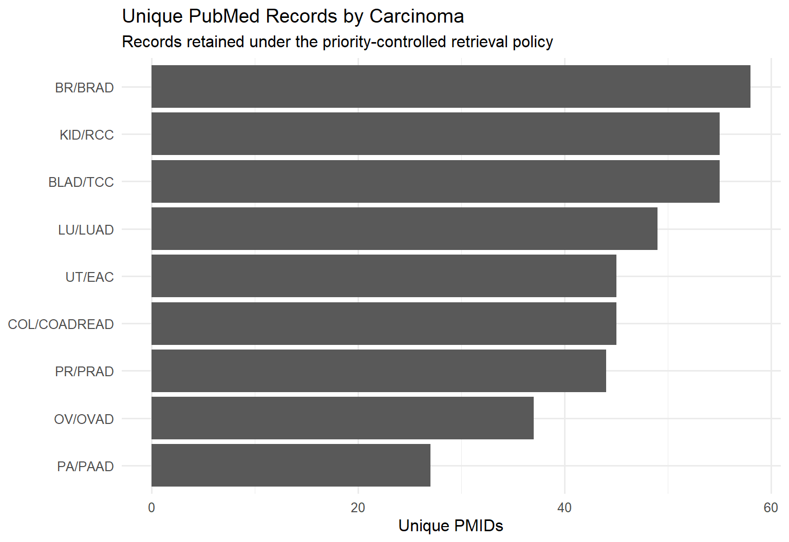
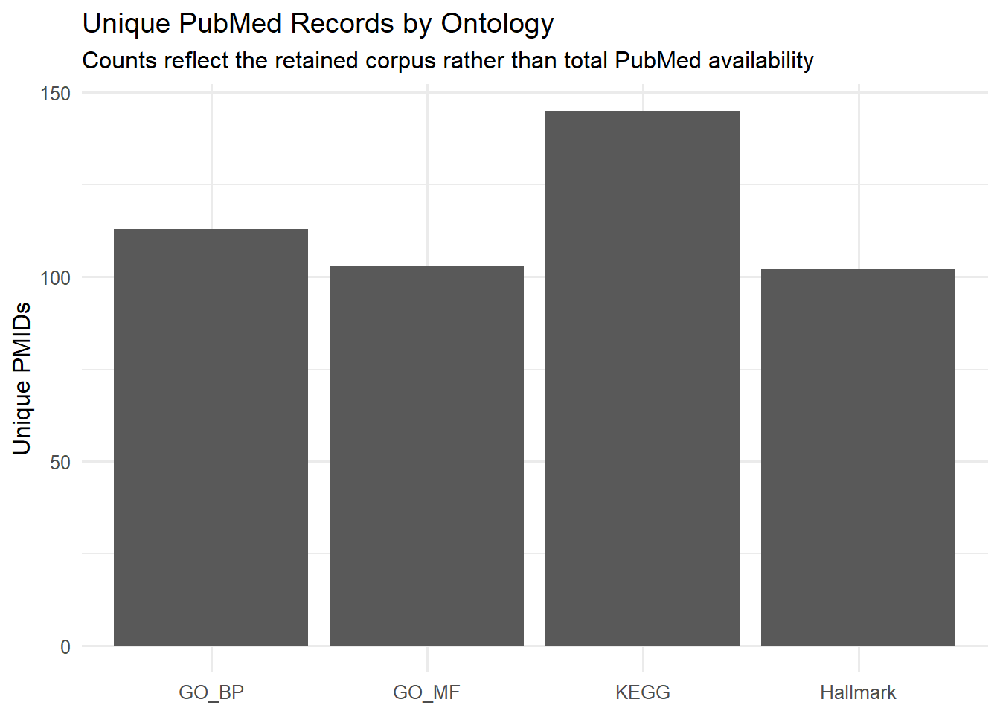
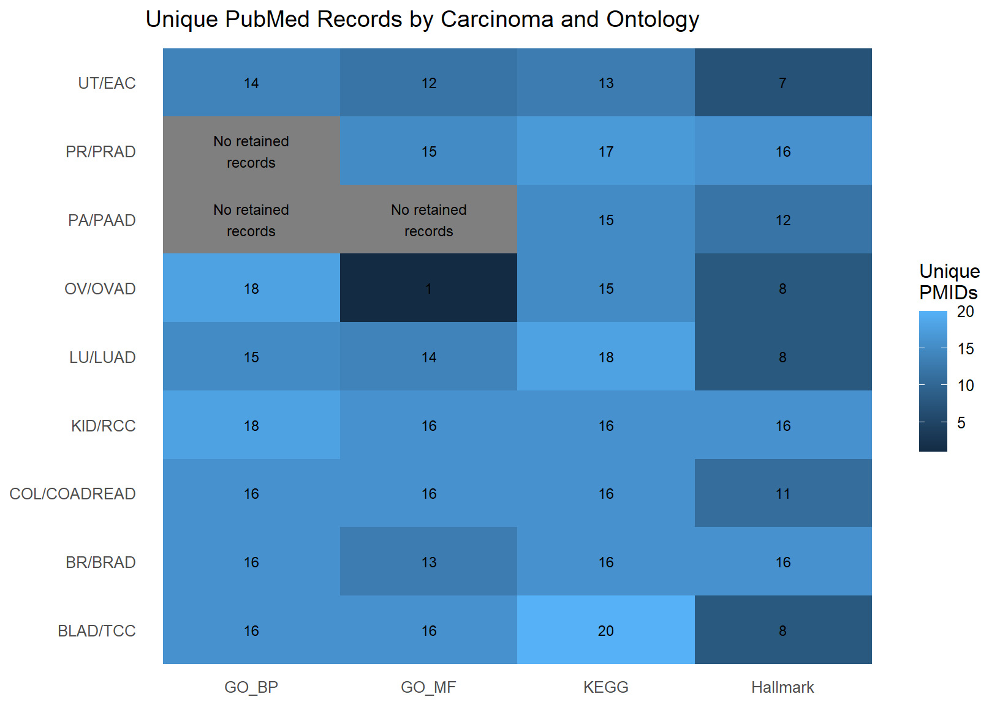
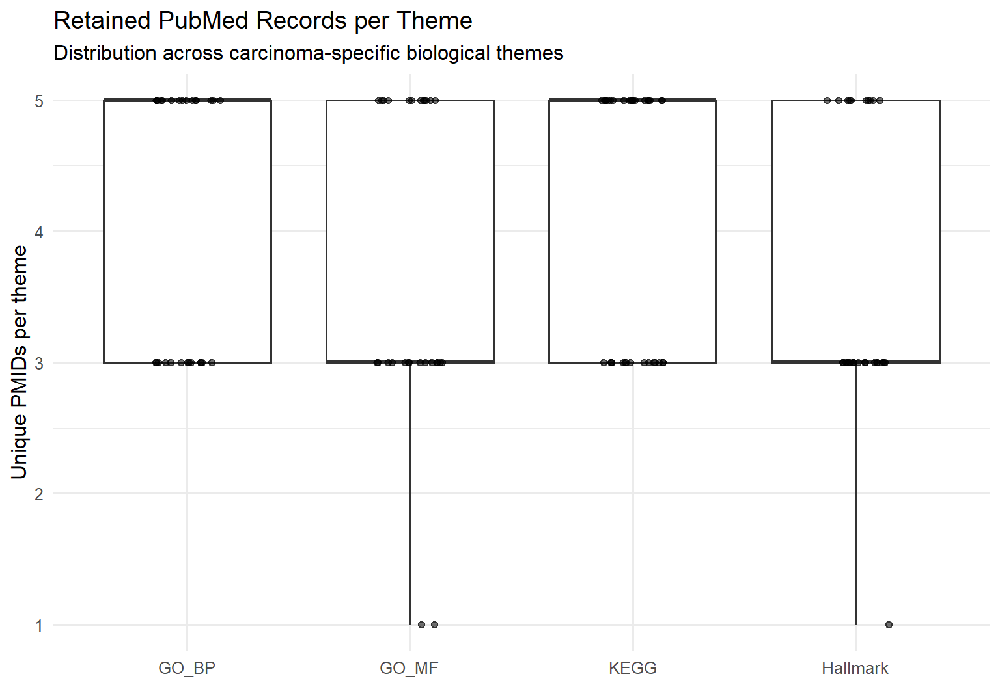
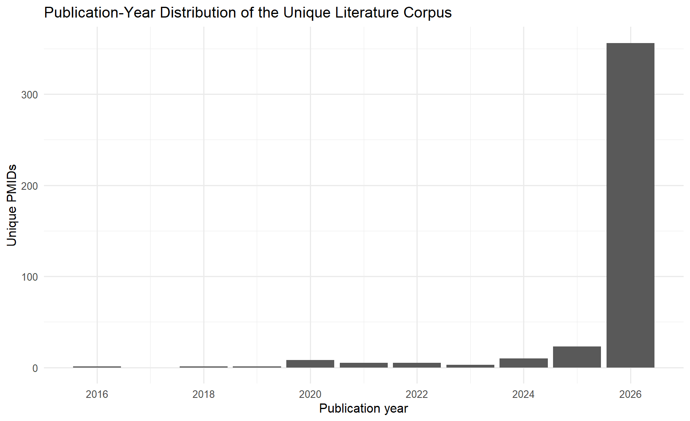
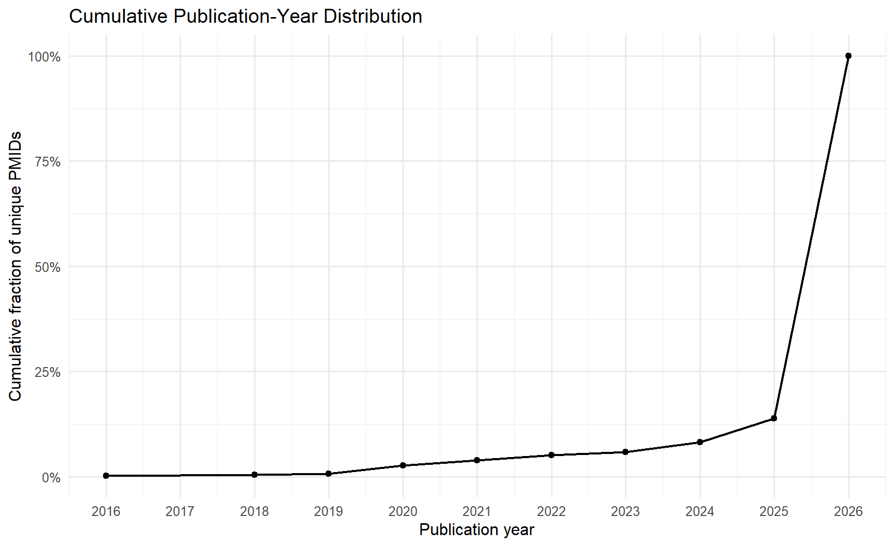
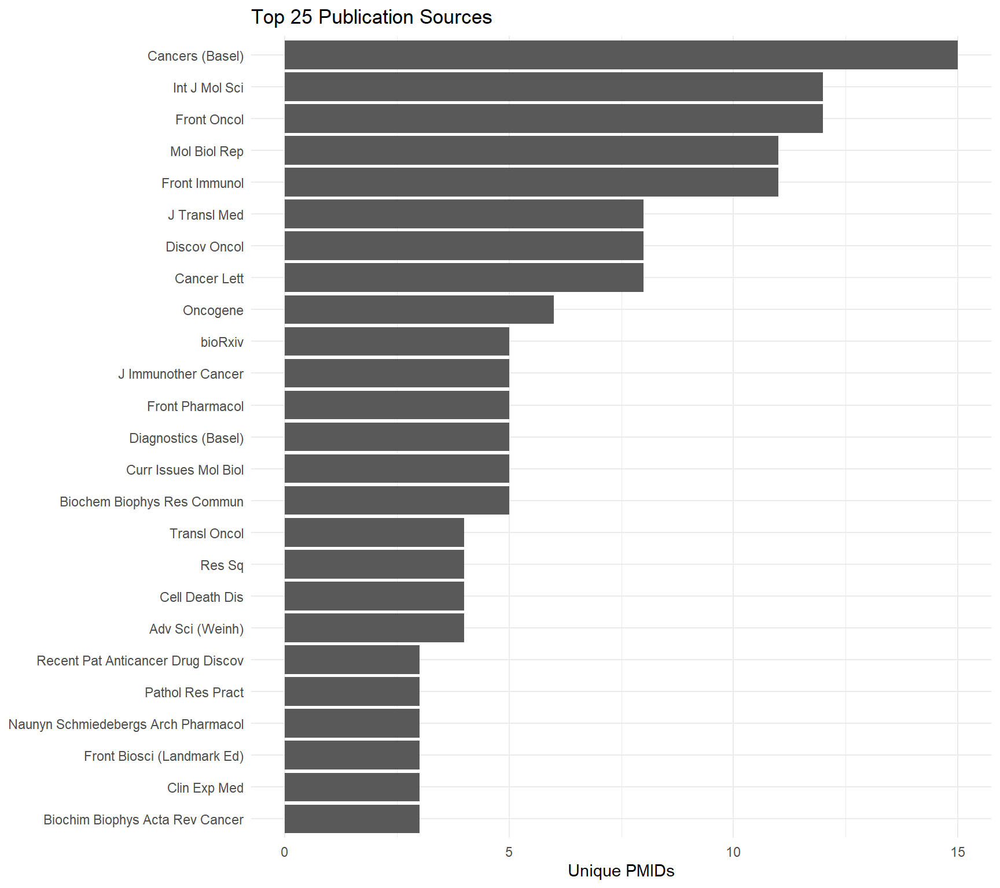
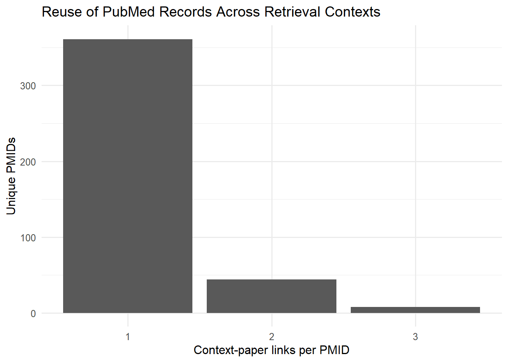

| Measure | Result |
|---|---|
| Carcinoma comparisons | 9 |
| Ontology modes | 4 |
| AI-generated themes represented | 120 |
| Search queries represented | 121 |
| Stored context-paper links | 473 |
| Unique PMIDs | 413 |
| Duplicate context-paper rows | 0 |
| Missing PMIDs | 0 |
| Missing titles | 0 |
| Missing publication dates | 0 |
| Missing publication sources | 0 |
| Publication-year range | 2016–2026 |
| Median publication year | 2026 |
Purpose
This report presents preliminary descriptive results from the literature-retrieval stage of the AI-Assisted Reasoning Framework.
The analysis covers the completed PubMed retrieval corpus for nine carcinoma comparisons:
- BLAD/TCC;
- BR/BRAD;
- COL/COADREAD;
- KID/RCC;
- LU/LUAD;
- OV/OVAD;
- PA/PAAD;
- PR/PRAD;
- UT/EAC.
The report describes the structure and composition of the retained literature corpus. It does not claim that every retrieved publication supports the associated AI-generated biological interpretation, nor does it treat retrieval counts as a measure of biological truth.
The evaluated workflow was:
Deterministic biological gene-set evidence
↓
Ontology-specific AI reasoning
↓
Canonical biological themes
↓
Prioritized PubMed search queries
↓
Priority-controlled literature retrieval
↓
DuckDB persistence
↓
Literature reporting views
↓
Descriptive corpus analysisThe present page therefore documents the first cross-carcinoma view of the literature layer produced by the reasoning pipeline.
Position Within the Framework
The literature-retrieval stage follows the deterministic structural and biological analyses and the AI-assisted reasoning stage.
The language model consolidates ontology-specific evidence into candidate biological themes and generates disease-contextualized PubMed queries. Those queries are then executed under a deterministic retrieval policy.
The current policy is priority-controlled:
- high-priority themes are generally assigned a larger retrieval window;
- medium-priority themes are assigned a smaller retrieval window;
- low-priority themes may be skipped.
This design prevents broad or heavily studied topics from overwhelming the corpus and keeps retrieval computationally bounded. It also means that the resulting paper counts represent the retained evidence sample, not the total number of matching PubMed records.
The literature corpus should therefore be interpreted as a controlled external evidence layer created for subsequent evaluation and synthesis.
Corpus Construction
The completed warehouse contains publication records linked to their retrieval context.
Each stored context preserves:
- carcinoma comparison;
- ontology mode;
- AI-generated theme;
- PubMed search query;
- PMID;
- publication title;
- publication date;
- publication source;
- retrieval date.
The descriptive analysis distinguishes three analytical grains:
Raw retrieval row
↓
Context–paper link
comparison + ontology + theme + query + PMID
↓
Unique publication
PMIDThis distinction is important because one publication may be retrieved for more than one theme, ontology, or carcinoma without representing an ingestion duplicate.
Corpus Overview
The corpus is technically clean at the current reporting grain. All 473 stored rows represent distinct context–paper relationships, while the reduction to 413 unique PMIDs reflects legitimate reuse of some publications across retrieval contexts.
Literature Coverage Across Carcinomas
The number of unique retained PMIDs varies across the nine carcinoma comparisons.

Breast, kidney, and bladder carcinoma generated the largest retained corpora, while pancreatic and ovarian carcinoma generated smaller corpora.
These differences should not yet be interpreted as differences in biological evidence strength. Corpus size is influenced by:
- the number of represented themes;
- ontology coverage;
- theme priority;
- configured retrieval limits;
- whether a query produced retained records.
The figure is therefore most useful as a description of retrieval output by carcinoma.
Literature Coverage Across Ontologies
The four ontology modes contributed different numbers of unique PMIDs.

KEGG produced the largest retained literature corpus. This is explained in part by the larger number of KEGG themes represented in the completed retrieval results.
The ontology totals should therefore be read together with the number of themes and queries generated under each mode. A larger total does not by itself indicate that an ontology produces stronger biological evidence.
Carcinoma–Ontology Coverage
The cross-classified heatmap shows how retained PMIDs are distributed across carcinoma and ontology contexts.

Most carcinoma comparisons contain retained records from all four ontology modes.
Several completed contexts contain no retained records or only a very small number:
- PA/PAAD has retained literature for KEGG and Hallmark but not GO BP or GO MF;
- PR/PRAD has no retained GO BP records;
- OV/OVAD has only one retained GO MF PMID.
Because the current literature table stores retained publication records rather than all attempted and skipped queries, these outcomes cannot yet be separated into:
- themes omitted by the priority policy;
- searches returning no PubMed records;
- searches returning records that were not retained;
- ontology modes producing no qualifying retrieval themes.
The absence of a retained record is therefore a pipeline outcome, not proof of absence from the scientific literature.
Retrieval Depth Per Theme
The distribution of unique PMIDs per theme is strongly bounded by the retrieval policy.

| Unique PMIDs retained | Number of themes |
|---|---|
| 1 | 3 |
| 3 | 60 |
| 5 | 58 |
This pattern reflects the priority-controlled design of the pipeline more directly than it reflects the total volume of literature available for each biological theme.
The figure demonstrates that retrieval was standardized and bounded across ontology modes. It should not be used to infer that the four ontologies have equivalent underlying literature support.
Publication-Year Composition
The retained corpus is overwhelmingly recent.


Most retained publications are dated 2026, and only a relatively small fraction of the corpus predates 2025.
The present corpus should therefore be understood as a recent-literature evidence sample. This is useful for identifying current biological interpretations and emerging mechanisms, but it does not provide a historically balanced representation of foundational cancer literature.
A future retrieval extension may combine:
Recent publications
+
Relevance-ranked publications
+
Foundational or review literatureThe current preliminary corpus is retained as generated so that its retrieval behavior remains auditable.
Publication Sources
The corpus draws from a broad set of molecular, cancer, immunology, and translational journals.

The most frequently represented sources include:
- Cancers;
- International Journal of Molecular Sciences;
- Frontiers in Oncology;
- Molecular Biology Reports;
- Frontiers in Immunology.
The presence of bioRxiv also indicates that the retained corpus is not restricted entirely to peer-reviewed journal publications.
At this stage, source frequency is descriptive. It does not assess publication quality, study design, or evidentiary strength.
Reuse Across Retrieval Contexts
Most PMIDs were retrieved for a single context, while a smaller subset appeared across multiple themes, ontologies, or carcinomas.

The reuse pattern shows:
- most publications are specific to one retrieval context;
- a smaller set appears in two contexts;
- a limited subset appears in three contexts;
- no large group of publications dominates the corpus across many unrelated queries.
This is encouraging from a retrieval-specificity perspective. The pipeline is not simply returning the same generic cancer papers for every biological theme.
Reuse should nevertheless be interpreted carefully.
A repeated PMID may indicate:
- convergence between independently generated themes;
- overlap between ontology modes;
- a broad publication matching several related mechanisms;
- semantic similarity among search queries.
The strongest preliminary form of convergence is reuse across different themes or ontologies within the same carcinoma. Cross-carcinoma reuse is comparatively rare.
What the Preliminary Results Establish
The completed retrieval analysis establishes that the current architecture can:
- generate disease-contextualized PubMed queries from AI reasoning artifacts;
- apply a deterministic priority-controlled retrieval policy;
- persist literature records with comparison-, ontology-, theme-, query-, and PMID-level provenance;
- distinguish contextual paper links from globally unique publications;
- maintain a deduplicated literature corpus;
- summarize retrieval behavior across carcinomas and ontologies;
- identify publication reuse across biological reasoning contexts;
- produce reusable reporting views, tables, figures, and manifests.
What the Preliminary Results Do Not Establish
The current results do not by themselves establish:
- that each retrieved paper supports the associated AI-generated interpretation;
- that five retained papers represent stronger evidence than three retained papers;
- that ontology modes with more PMIDs are biologically superior;
- that carcinomas with larger retained corpora have stronger or more extensively validated mechanisms;
- that an absent carcinoma–ontology cell means no relevant literature exists;
- that reused PMIDs necessarily constitute independent evidence convergence;
- that the recent-publication bias provides a complete view of the field.
Retrieval is a necessary intermediate step, but it is not equivalent to evidence adjudication.
Reporting Interpretation
The current results should be read at four levels:
Computed biological evidence
Gene-set and structural results generated before the language model was invoked.
AI-generated themes and queries
Candidate biological organizations and literature questions produced from structured evidence.
Retrieved literature corpus
Publication records returned and retained under the configured retrieval policy.
Future evidence assessment
A separate evaluation of whether each paper supports, refines, challenges, or fails to resolve the associated interpretation.
Preserving these distinctions is essential to the scientific use of the literature layer.
Preliminary Conclusions
The nine-carcinoma retrieval corpus demonstrates that AI-generated biological reasoning can be connected to a reproducible and auditable external literature workflow.
The resulting corpus is:
- complete for the currently configured nine-carcinoma retrieval runs;
- technically clean and deduplicated;
- bounded by priority-dependent retrieval windows;
- strongly weighted toward recent publications;
- largely carcinoma- and theme-specific;
- characterized by modest but identifiable cross-context PMID reuse.
The present analysis is preliminary because it describes which publications were retrieved, not yet what those publications establish.
Next Reporting Stage
The next extension should evaluate the relationship between each AI-generated theme and its retrieved literature.
A structured evidence-synthesis stage could classify individual publications as:
- supporting;
- refining;
- challenging;
- tangential;
- insufficient or unresolved.
That assessment should remain linked to the original theme, query, PMID, and reasoning artifact so that the transition from computed evidence to AI interpretation to external literature remains transparent and traceable.